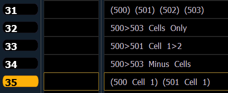

There are multiple different ways to create groups using multicell fixtures.
Note: The following examples are created in the group list. Groups can also be recorded in Live. See Recording Groups Live
To create subgroups of the whole multicell fixtures:
To create a group with only the cells of the selected multicell fixtures:
To create a group with only certain cells of multicell fixtures:
To create a group with only the master cells:
To create subgroups with only specific cells:

You can also use the {Offset} softkeys to aid in create of groups and subgroups. See Offset for more information.